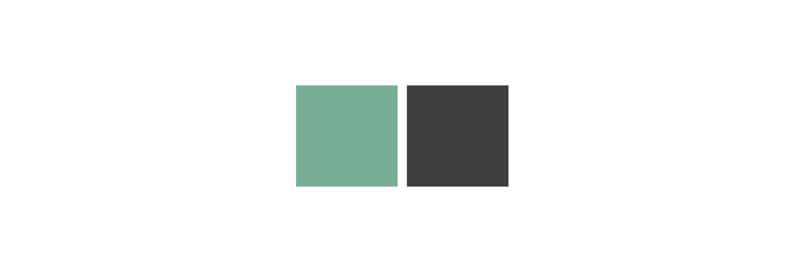
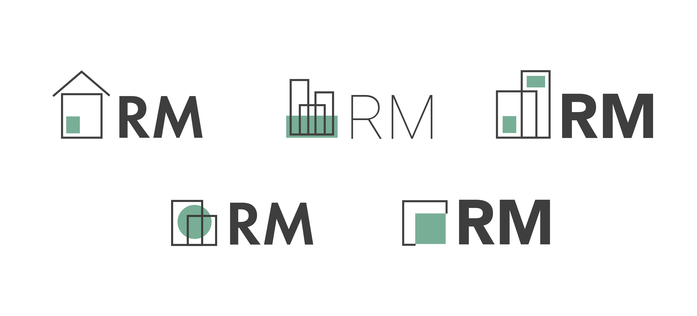
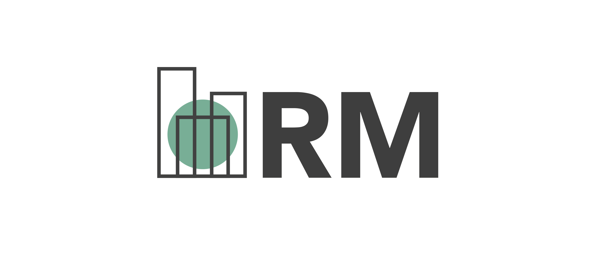
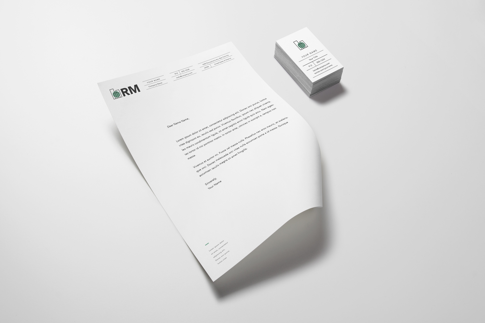

Overview
Based in Philadelphia, RM Green Environmental Services, LLC specializes in asbestos building inspections, lead-based paint assessments, and indoor air quality inspections. I had the opportunity to design their logo. The client expressed interest in a logo that reflects his business and his personality. Because the company mainly inspects buildings so they are clean from asbestos, lead-based paint, and mold, the logos were designed to reflect cleanliness, completeness, and trustworthiness.
Tools
Adobe Illustrator
Colors
I used a shade of green to reflect "green environmental services" and to also reflect Philadelphia's blue-green-tinted skyline.

Typeface
I chose 3 different options for the typeface - Roboto, Avenir, and Futura PT. These three gave the feeling of strong trust and cleanliness.
Preliminary Designs
The first designs were variations of the three typefaces and different iconography that represents buildings and the environment. I wanted the spot of green to represent RM's personality and his work as someone who ensures safe environments.

Final Logo

Logo Mockup
